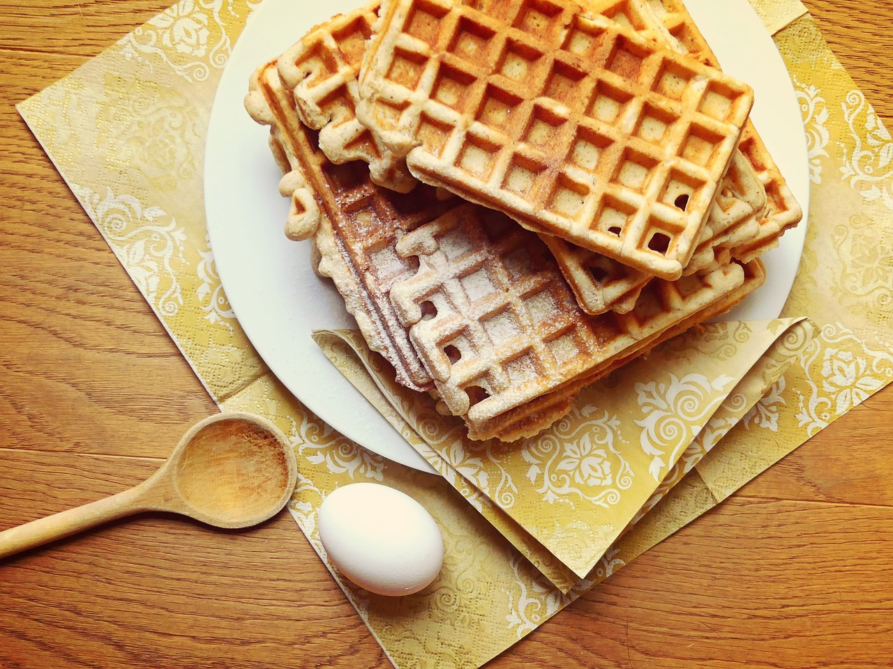

Waffles

Description
A waffle is a dish made from leavened batter or dough that is cooked
between two plates that are patterned to give a characteristic size,
shape, and surface impression. There are many variations based on the type
of waffle iron and recipe used.
Ingredients
- 2 eggs
- 2 cups all-purpose flour
- 1 ¾ cups milk
- ½ cup vegetable oil
- 1 tablespoon white sugar
- 4 teaspoons baking powder
- ¼ teaspoon salt
- ½ teaspoon vanilla extract
Steps
-
Preheat waffle iron. Beat eggs in large bowl with hand beater until
fluffy. Beat in flour, milk, vegetable oil, sugar, baking powder, salt
and vanilla, just until smooth.
-
Spray preheated waffle iron with non-stick cooking spray. Pour mix onto
hot waffle iron. Cook until golden brown. Serve hot.